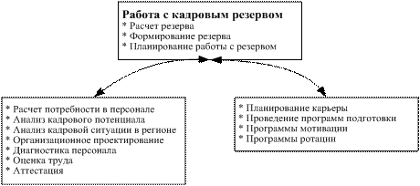

Masterarbeit
Тема: Экономический анализ внутреннего рынка труда
Выполнено Отт, Алексей
Студент 9-го потока Deutschen MBA-Programms
Moskau
der Fakultät für Wirtschaftswissenschaft
an der Otto-von-Guericke-Universitat Magdeburg
Matrikelnummer: 170440
На соискание степени „Master of Business Administration“
Научный руководитель: PD Dr. Thomas Bürkle
Moskau, den 22.07.2005
Содержание
2 Внутренний рынок труда: теоретические основы
2.1 Что такое внутренний рынок труда?
2.1.1 Основные признаки внутреннего рынка труда
2.1.2 Преимущества внутреннего рынка труда для предприятия
2.2 Мероприятия по развитию внутреннего рынка труда
2.2.1 Разработка компетенций по должностям
2.2.2 Оценка деятельности персонала
3 Внутреннего рынок труда в компании «ОМС»
3.1 Текущее состояние компании «ОМС» и перспективы развития компании и отрасли
3.2 Существующие мероприятия по формированию внутреннего рынка труда
3.2.1 Кадровый резерв компании ОМС
3.2.4 Оценка персонала компании «ОМС»
3.3 Методы улучшения состояния внутреннего рынка труда «ОМС»
3.3.1 Разработка системы компетенций по всем должностям
3.3.2 Внедрение технологии оценки персонала Assessment Center
3.3.3 Развитие персонала с помощью внутрифирменного центра обучения
3.3.4 Разработка системы грейдов
В ходе своего развития, каждое предприятие сталкивается с необходимостью привлечения кадров на создаваемые и освобождающиеся рабочие места. Часто, для заполнения новых рабочих мест производят поиск сотрудников на внешних (по отношению к предприятию) рынках труда. Но достаточно часто, можно найти сотрудников для новых рабочих мест, внутри самого предприятия. Это позволяет уменьшить время для ознакомления сотрудников с делами, а кроме этого, позволяет обеспечивать развитие сотрудников предприятия и их карьерный рост.
Привлечение существующего персонала на новые должности, развитие персонала, все эти действия являются составными частями внутреннего рынка труда предприятий. Развитие этого рынка является очень важным в наше время, когда знания персонала, а не материальные ценности, являются капиталом. Внутренний рынок труда является предметом исследования многих известных специалистов в области работы с персоналом.
В данной работе, в качестве примера для исследования внутреннего рынка используется российская компания «ОМС», которая предоставляет своим клиентам услуги клининга и кетеринга. Быстрое развитие компании требует развития персонала, что позволит улучшить качество работы персонала и уменьшить текучку персонала.
Данная работа состоит из двух частей. В первой части данной работы, будут рассмотрены теоретические принципы внутреннего рынка труда. А во второй части, будет рассмотрен внутренний рынок труда компании «ОМС» – существующие мероприятия по работе с персоналом, а также будущие мероприятия, направленные на улучшение работы с персоналом компании.
Внутренний рынок труда – рынок труда, основанный на движении персонала внутри предприятия (или группы предприятий). Движение персонала может происходить:
· либо по горизонтали, когда работник переходит на новое рабочее место, сходное прежнему по выполняемым функциям и характеру работы;
· либо по вертикали – на более высокий разряд или должность.
Doeringer и Piore определяют внутренний рынок труда как "an administrative unit, such as a manufacturing plant, within which the pricing and allocation of labor is governed by a set of administrative rules and procedures" (Doeringer и Piore 1985:2-3).
В отличии от внешнего рынка труда, рабочие силы распределяются не на основании рыночных механизмов, а на основании соблюдаемых правил и регламентов. При этом, данные правила могут оперировать разными критериями для установления оплаты труда и принятия решений о распределении рабочих сил. Даже критерий эффективности может играть тут не основную роль.
Doeringer и Piore различают специфические для фирм внутренние рынки труда ("enterprise market") и специфические для профессии внутренние рынки труда ("craft market").
Специфические для профессии внутренние рынки труда являются типичными для ремесленных профессий. Этот вид ВРТ распространен в США, где существуют агентства, которые распределяют работников между разными предприятиями. При этом, кластеры подвижности определяются предопределенными движениями между разными работодателями, но в пределах одной и той же профессии. Такие рынки обычно защищены организационно, так что на них могут попасть только лица с определенным образованием или навыками.
Специфические для фирм внутренние рынки труда являются классическим видом внутреннего рынка труда, и многие исследователи, обращаясь к теме внутреннего рынка труда, имеют в виду именно эту разновидность рынка труда.
Внутренняя структура внутренних рынков труда зависит от преобладающего режима мобильности персонала. Обычно она описывается так называемым кластером подвижности. Doeringer и Piore указывают, что переходы на другую работу происходят преимущественно между рабочими местами, которые принадлежат к тому же кластеру. Такие кластеры состоят из рабочих мест, которые нуждаются в похожих навыках, имеют похожая деятельность, группируются вокруг одних и тех же участков работы или принадлежат к той же самой функциональной или организационной единице (Doeringer и Piore 1985:50f).
Признаком наличия внутреннего рынка труда также является наличие так называемых карьерных лестниц ("Karriereleiter"), которые являются прототипом кластера подвижности. Рабочие места в таком кластере располагаются иерархически и места в наверху могут занимать сотрудники, прошедшие все стадии карьерной лестницы.
Das Definitionskriterium interner Arbeitsmärkte besteht in dem spezifischen Allokationsprozeß, in dem Arbeitnehmer auf bestimmte Arbeitsplätze zugewiesen werden. Interne Arbeitsmärkte zeichnen sich vor allem durch Mobilitätscluster, Karriereleitern usw. aus. Solche Allokationsmechanismen korrespondieren aber mit den Charakteristiken der Arbeitsnachfrage: Arbeitsplätze in internen Arbeitsmärkten sind geschützt, bieten bessere Karrierechancen etc. Auch für die Struktur des Arbeitsangebots bleiben interne Arbeitsmärkte nicht ohne Folgen: Arbeitnehmer, die den Zugang zu internen Arbeitsmärkten schaffen, müssen ihre Qualifizierung für die aussichtsreichen Jobs der internen Arbeitsmärkte nachweisen, sich motiviert und engagiert zeigen. Arbeitnehmer, die als "unsichere Kandidaten" gelten - und dazu gehören Frauen, Angehöriger ethnischer Minderheiten, Personen mit inferioren Bildungsabschlüssen - werden auf sekundäre Arbeitsmärkte verwiesen.
In firmeninternen Arbeitsmärkten erfolgt die Schließung im Wesentlichen über den Arbeitsvertrag. Der Vertrag verhindert die willkürliche Entlassung des Arbeitnehmers und begründet die indefinite Dauer der Besetzung einer Position. Die Karriereleitern innerhalb von firmeninternen Arbeitsmärkten definieren Vakanzketten. Die Aufstiegsleiter als solche führt ebenfalls zur Schließung von Positionen, da Jobs im Bezug aufeinander definiert werden und damit eine Existenz unabhängig von ihren Inhabern erhalten. "Interdependence among jobs, created by the technical division of labor, implies that the existence of some jobs is necessary for the functioning of other jobs. The corresponding separation of the existence of the job from the jobholder is a necessary though not sufficient condition for the employee to gain control over the job" (Sørensen und Kalleberg 1981:62).
Mit der Schließung der Positionen in den Karriereleitern sind die Voraussetzungen für Ascription und Alimentierung gegeben. Doch die Länge der Karriereleiter ist ein wichtiger Strukturparamater, der das Ausmaß der Mobilität in der Leiter und damit auch den Schließungsgrad der einzelnen Positionen beeinflußt. Je tiefer die Leiter gestaffelt ist, je mehr Positionen sie beinhaltet, desto mehr Vakanzen entstehen in einem gegebenen Zeitintervall. Das Ausmaß der Mobilität ist größer und die Verweildauer in den einzelnen Positionen wird kürzer. Anders ausgedrückt: Je tiefer die Leiter gestaffelt ist, desto geringer ist der Schließungsgrad der einzelnen Positionen innerhalb der Leiter.
Zusammenfassend läßt sich sagen, daß die Besetzung von Positionen in tiefgestaffelten Karriereleitern nach Achievementkriterien wahrscheinlicher ist als in Systemen mit flachen Vakanzketten, und die Übereinstimmung von Produktivität und Entlohnung ist leichter sicherzustellen als dort. Es können hier Allokations- und Verteilungsprinzipien implementiert werden, wie sie von neoklassischen Arbeitsmarktmodellen angenommen werden. Karriereleitern können die Effizienz der Organisation der Produktion sichern, wenn auch mit anderen Mitteln als es das Grenzprodukttheorem annimmt (Sørensen und Kalleberg 1981:57)
Je kürzer die Karriereleitern werden, desto stärker fällt die Kontrolle von Qualifikation und Performanz an die Arbeitnehmer. Die längere Verweildauer erschwert die Anpassung des Qualifikationsniveaus der Arbeitnehmer an das Lohnniveau. Der Anreizeffekt sinkt mit der Zahl der Beförderungswellen. Die Unsicherheit der Allokationsentscheidung hinsichtlich der zukünftigen Produktivität der Arbeitnehmer steigt mit der Verweildauer in den einzelnen Positionen. Askriptive Merkmale gewinnen für die Allokation an Bedeutung.
Формирование внутреннего рынка труда может оказать серьезное влияние на деятельность предприятия. Сюда можно отнести несколько факторов:
· Работники, работающие на предприятии, приобретают специфический для данного предприятия (рабочего места, участка) опыт, что является одним из подходов повышения квалификации работников (так называемый подход "Learning by doing"). При этом не происходит отрыва работника от производства;
· При проведении мероприятий по формированию внутреннего рынка труда повышается лояльность работников предприятия;
· При удержании работников снижаются издержки на найм и обучение, которые должны были возникнуть при наборе новых работников;
· Повышение эффективности труда сотрудников при проведении мероприятий по обучению и мотивации;
· Проведение аттестаций позволяет произвести отсев сотрудников, имеющих низкую эффективность труда;
· За счет развития сотрудников, их оценки и передвижения внутри предприятие может производить оптимизацию численности сотрудников;
· За счет оптимизации численности сотрудников и внедрения систем материальной мотивации, таких как система грейдов, предприятие может минимизировать издержки на оплату труда.
Развитие внутреннего рынка труда не связано только с работой с существующим персоналом. Формирование внутреннего рынка труда происходит в несколько этапов:
· Определение функционала должностей. Сюда относятся работы по формированию должностных инструкций, положений о подразделениях, положений о бизнес-процессах и процедур по этим процессам;
· Определение требований к должностям. Сюда можно отнести: создание компетенций, определение профиля идеального кандидата;
· Подбор персонала. Подбор производится согласно определенным компетенциям. На этапе подбора проводится Assessment кандидатов для определения соответствия предполагаемой должности. После принятия решения о занятии должности кандидатом, ему определяется индивидуальный план работы на период испытательного срока;
· Оценка работы персонала в испытательный срок. После испытательного срока кандидат подвергается промежуточной аттестации на соответствие поставленным на испытательный срок задачам;
· Оценка персонала, проводимая на регулярной основе. В ходе этих оценок, производится анализ возможностей, и по результатам оценки могут проводиться мероприятия по развитию и мотивации персонала;
· Мероприятия по развитию персонала направлены на улучшение производительности и качества работы персонала;
· Мероприятия по мотивации персонала дают возможность стимулировать персонал в целях повышения производительности труда и лояльности персонала;
· Формирование кадрового резерва, дает возможность предприятию развиваться, основываясь на имеющемся кадровом потенциале.
Данные этапы, являются наиболее часто применяемыми на большинстве предприятий. В данной работе, мы более подробно рассмотрим мероприятия по оценке, развитию, мотивации персонала, а также по формированию кадрового резерва, поскольку эти мероприятия наиболее тесно связаны с формированием внутреннего рынка труда предприятия.
Разработка компетенций по должностям является важным этапом развития внутреннего рынка труда. Данный этап позволяет определить четкие критерии оценки сотрудников предприятий, как уже работающих, так и нанимаемых на работу.
Для каждой из должностей разрабатывается свой профиль знаний и умений, который затем позволяет оценить деятельность конкретных сотрудников. Разрабатываемые компетенции часто разбивают на блоки:
· профессиональные компетенции;
· планово-организационные компетенции;
· профильные компетенции;
· лидерский потенциал;
· коммуникативные компетенции;
· креативные компетенции;
· мотивационно-энергетические компетенции.
На основе блоков компетенций затем могут формироваться анкеты и бланки оценки деятельности сотрудников, которые могут использоваться при оценке деятельности персонала. Пример, бланка оценки компетенций приведен в приложении 1.
При развитии внутреннего рынка труда предприятия, нельзя обойтись без оценки деятельности персонала. Особенно это касается ключевого персонала, без которого невозможна деятельность предприятия и персонала, в отношении которого, предприятие планирует деятельность по его развитию. В настоящее время существуют разные методики, предназначенные для оценки деятельности персонала. Они различаются по качеству оценки, степени достоверности оценки, затратам на оценку и другим параметрам.
Процедуры аттестации можно разделить на две группы:
· оценка труда;
· оценка персонала.
Оценка труда – мероприятия по определению соответствия количества и качества труда требованиям технологии производства. Оценка труда имеет своей целью сопоставить реальное содержание, качество, объемы и интенсивность труда персонала с планируемыми. Планируемые характеристики труда персонала, как правило, представлены в планах и программах, технологических картах, работы предприятия. Оценка труда дает возможность оценить:
· количество;
· качество;
· интенсивность труда.
Оценка труда дает возможность решить следующие кадровые задачи:
· оценить потенциал для продвижения и снижения риска выдвижения некомпетентных сотрудников;
· снизить затраты на обучение;
· поддерживать у сотрудников чувство справедливости и повышать трудовую мотивацию;
· организовать обратную связь сотрудникам о качестве их работы;
· разрабатывать кадровые программы обучения и развития персонала.
Оценка персонала имеет своей целью изучить степень подготовленности работника к выполнению именно того вида деятельности, которым он занимается, а также выявить уровень его потенциальных возможностей с целью оценки перспектив роста (ротации), а также разработки кадровых мероприятий, необходимых для достижения целей кадровой политики.
Анализ практики управления показывает, что корпорации используют в большинстве случаев одновременно оба вида оценки деятельности работников. Таким образом, проводятся процедуры, направленные как на оценку результатов труда, так личных и деловых качеств работников, влияющих на достижение этих результатов.
Следует отметить, что к оценке персонала могут привлекаться как непосредственные руководители оцениваемых, так и другие начальники, коллеги, подчиненные, специалисты кадровых служб, внешние консультанты и, наконец, сам оцениваемый (самооценка). Таким образом, минимальное знакомство с методами оценки персонала всех работников - гарантия того, что применяемые методы дадут ожидаемый эффект.
Существует несколько подходов к оценке труда персонала, среди которых можно выделить следующие подходы:
· Оценка результата (например, полученной прибыли). Затруднение вызывает оценка сложных, комплексных видов деятельности, затрагивающей множество людей, поскольку возникает проблема оценки вклада каждого в получение результата.
· Оценка поведения (по критериям, связанным с исполняемой деятельностью). Наибольшая проблема – отделение реального поведения и общих характерологических черт.
· Рейтинги успешности (по ряду шкал, отражающих поведенческие измерения или измерения черт). Проблемы этого подхода – ошибки обобщений и генерализации, при которых оценки одних шкал необоснованно переносятся на другие (примерами модифицированных рейтингов являются ориентированные на поведение рейтинговые шкалы, шкалы наблюдения за поведением).
· Процедуры ранжирования, дающие возможность установить различия между рядом лиц (по одному или ряду показателей). Однако при использовании прямых рейтингов могут давать ложные (субъективные) результаты.
Для организации эффективной системы оценки результативности труда работников необходимо:
· провести паспортизацию рабочих мест;
· установить стандарты результативности труда для каждого рабочего места и критерии ее оценки;
· выработать политику проведения оценок результативности труда (когда, как часто и кому проводить оценку);
· обязать определенных лиц производить оценку результативности труда;
· вменить в обязанность лицам, проводящим оценку, собирать данные о результативности труда;
· обсудить оценку с работником;
· принять решение и документировать оценку.
Оценка персонала обычно проводится в несколько этапов, среди которых основными являются следующие:
1. Подготовка - разработка критериев, принципов и методики проведения аттестации;
· разработка критериев оценки персонала в соответствии с разработанной системой компетенций по должностям;
· издание нормативных документов по подготовке и проведению аттестации (приказ, список аттестационной комиссии, методика проведения аттестации, план проведения аттестации, программа подготовки руководителей, инструкция по хранению персональной информации);
· подготовка специальной программы;
· подготовка материалов аттестации (бланки, формы и т. д.).
2. Проведение аттестации - аттестуемые и руководители самостоятельно (по разработке кадровой службы) готовят отчеты;
· аттестуемые и не только руководители, но и сотрудники и коллеги заполняют оценочные формы;
· анализируются результаты;
· проводятся заседания аттестационной комиссии.
3. Подведение итогов аттестации – анализ кадровой информации, ввод и организация использования персональной информации, и подготовка рекомендации по работе с персоналом;
4. Проведение мероприятий по результатам аттестации.
Все методы оценки можно разделить на методы индивидуальной оценки работников, которые основаны на исследовании индивидуальных качеств и результатах труда работника, и методы групповой оценки, которые основаны на сравнении эффективности работников внутри группы. В следующих разделах, конкретные методы оценки будут рассмотрены более подробно.
Под аттестацией часто понимают стандартные методы оценки персонала, которые можно провести достаточно быстро и без больших затрат. Сюда можно отнести следующие методы оценки:
· Метод анкетирования. Оценочная анкета представляет собой определенный набор вопросов и описаний. Оценивающий анализирует наличие или отсутствие указанных черт у аттестуемого и отмечает подходящий вариант.
· Описательный метод оценки. Производящий оценку должен выявить и описать положительные и отрицательные черты поведения аттестуемого. Этот метод не предусматривает четкой фиксации результатов и потому часто используется как дополнение к другим методам.
· Метод классификации. Этот метод основан на ранжировании аттестуемых работников по определенному критерию от лучшего к худшему с присвоением им определенного порядкового номера.
· Метод сравнения по парам. В этом методе сравнивается в группе аттестуемых, находящихся в одной должности, каждый с каждым, после чего подсчитывается количество раз, когда аттестуемый оказывался лучшим в своей паре. На основе полученных результатов строится общий рейтинг по группе
· Рейтинг или метод сравнения. Он основан на оценке соответствия работника занимаемой должности. Это метод шкалирования личных качеств работника. Важнейший компонент данного вида оценки - список задач, которые должен выполнять аттестуемый сотрудник. После составления этого списка (он может быть взят и из должностных инструкций) происходит изучение деятельности с учетом времени, затрачиваемого сотрудником на принятие решений, способов выполнения поставленных задач. Учитывается также, насколько экономно сотрудником используются материальные средства. Затем происходит оценка перечисленных в списке качеств аттестуемого сотрудника по 7-бальной шкале: 7 – очень высокая степень, 1 – очень низкая степень. Анализ результатов может проводиться либо по соответствию выявленных оценок эталонным, либо сравнением результатов, полученных от работников одной и той же должности.
· Метод анкет и сравнительных анкет. Включает набор вопросов или описаний поведения работника. Оценщик проставляет отметку напротив описания той черты характера, которая, по его мнению, присуща работнику, в противном случае оставляет пустое место. Сумма пометок дает общий рейтинг анкеты данного работника. Используется для оценки руководством, коллегами и подчиненными.
При круговой аттестации сотрудник оценивается своим руководителем, своими коллегами и своими подчиненными. Конкретные формы оценки могут варьироваться, но все оценивающие заполняют одинаковые бланки и обработка результатов производится с помощью компьютеров, чтобы обеспечить анонимность. Цель метода – получить всестороннюю оценку аттестуемого.
Круговая оценка может использоваться при оценке работы работников среднего управляющего звена. Но наиболее успешно, она может применяться при оценке персонала, предназначенного для кадрового резерва, поскольку дает комплексную оценку работы сотрудника.
Эта методика заимствована отделами по работе с персоналом из социологии.
Вот пример плана интервью с целью оценки личности. В интервью важно получить информацию о следующих компонентах и характеристиках личности:
· интеллектуальная сфера;
· мотивационная сфера;
· темперамент, характер;
· профессиональный и жизненный опыт;
· здоровье;
· отношение к профессиональной деятельности
· ранние годы – детский сад, школа, обучение (начальное, среднее, высшее, профессиональное), служба в армии;
· отношение к работе на фирме;
· увлечения;
· самооценка возможностей, здоровья;
· семейное положение, отношения в семье;
· формы проведения досуга.
Для оценки работника могут быть применены и различные тесты. По своему содержанию они разделяются на три группы:
· квалификационные, позволяющие определить степень квалификации работника;
· психологические, дающие возможность оценить личностные качества работника;
· физиологические, выявляющие физиологические особенности человека.
Положительные стороны тестовой оценки в том, что она позволяет получить количественную характеристику по большинству критериев оценки, и возможна компьютерная обработка результатов. Однако, оценивая потенциальные возможности работника, тесты не учитывают, как эти способности проявляются на практике.
Проведение конкурсов (например, на звание лучшего работника подразделения) является эффективным методом оценки и стимулирования персонала. Особенно этот метод эффективен при оценке низшего персонала, поскольку требует минимальных затрат на оценку, и создает конкурентную среду среди работников подразделения, что приводит к повышению производительности.
Оценка проводится группой экспертов и нацелена на выяснение способностей кандидата, дающих ему право претендовать на другие должности, в частности на выдвижение на повышение.
Данная методика состоит из следующих этапов:
· деятельность разбивается на отдельные составляющие;
· определяется результативность каждого вида деятельности в баллах по шкале (например, от-10 до+10), и таким образом определяют степень успеха;
· составляются три списка работ – те работы, которые удается решить успешно; которые удаются от случая к случаю; и те, которые никогда не удаются;
· выносится заключительная комплексная оценка.
Оценка в самом общем виде заключает следующие четыре действия:
· выбор оцениваемых качеств, показателей деятельности работника;
· использование разных методов сбора информации;
· оценочная информация должна давать комплексное представление о человеке;
· сравнение реальных качеств сотрудника с требуемыми качествами.
Изучаемые наборы качеств разрабатываются с учетом задач, выполняемых по должности. Обычно таких качеств набирается от 5 до 20.
Оценка персонала по методу Assessment-центра является самым затратным, но в тоже время, одним из самых надежных методов. С помощью этого метода решаются две задачи:
· выясняются личные и деловые качества работника, (обычно этот метод используется для оценки руководящих сотрудников);
· определяется программа индивидуальных тренировок руководителя, позволяющая развить его способности, поведенческие навыки.
Перед проведением оценки по данному методу, необходимо точно определить компетенции, требуемые для каждого из сотрудников. Компетенция – это набор поведенческих характеристик, необходимых сотруднику для успешного выполнения той или иной работы.
Испытания, используемые при работе по данному методу, занимают разное время. Например, для оценки профессионализма мастера достаточно несколько часов, для менеджера невысокого уровня - один день, для менеджеров среднего звена - два-три дня, чуть более для руководителей и управляющих высшего звена. Вот некоторые из используемых для оценки процедур:
· Выполнение управленческих действий. За отводимые на выполнение задания два часа испытуемый должен ознакомиться с некоторыми инструкциями, деловыми бумагами, приказами и другими материалами, необходимыми для отдачи распоряжений по конкретным технологическим, производственным, кадровым вопросам. Так имитируется реальная деятельность фирмы. После окончания двухчасовой работы над заданием с оцениваемым проводится интервью.
· Обсуждение проблем в небольшой группе. Эта процедура позволяет выявить умение работать в группе. Членам группы дается материал, с которым надо ознакомиться, самостоятельно принять решение по заданному вопросу и во время группового обсуждения (40-50 минут) убедить остальных в его правильности. На всех перечисленных этапах испытуемый оценивается наблюдателями в баллах.
· Принятие решений. Испытуемых разделяют на несколько групп (представители конкурирующих фирм). Моделируется работа фирм на протяжении нескольких лет (2-5лет). Каждый час считается одним годом, в течение которого решается ряд задач. Деятельность каждого испытуемого оценивается экспертами.
· Разработка и представление проекта. Необходимо за 1 час разработать проект плана развития какого-то рода деятельности, который потом защищается перед экспертами.
· Подготовка делового письма. Каждый испытуемый готовит деловые письма по разным вопросам и с разных позиций: отказ, отмена решения, высказывание негативной информации и т.д. Действия оценивают эксперты.
Иногда практикуется и сравнение результатов экспертной оценки работника с его самооценкой своих личных и деловых качеств. Результаты такого сравнения могут быть очень показательными как для руководства, так и для самого работника.
Особенно данный метод оценки эффективен для оценки высшего управляющего персонала.
При использовании метода ключевых показателей деятельности, руководитель и подчиненный совместно определяют ключевые цели деятельности работника на определенный срок (год-полгода). Цели должны быть конкретными, достижимыми, но напряженными, иметь значение, как для профессионального развития работника, так и для совершенствования деятельности организации. Устанавливаемые цели очерчивают сферу ответственности работника и круг его обязанностей на те конкретные сроки, которые необходимы для достижения намечаемого результата. Эти результаты должны быть измеримыми хотя бы в процентах. Оценка результатов производится совместно руководителем и работником на основе индивидуальных стандартов реализации целей, однако руководитель обладает решающим голосом при подведении итогов.
Из ключевых показателей деятельности складываются ключевые показатели деятельности подразделений компании, и затем – самой компании.
Модели компетентности описывают интеллектуальные и деловые качества работника, его навыки межличностной коммуникации, необходимые для успешной профессиональной деятельности в рамках существующей в организации корпоративной культуры. Разрыв между необходимым и существующим уровнем компетентности становится основанием для разработки индивидуальных планов профессионального развития. Выполнение этих планов, находящее выражение в конкретных результатах профессиональной деятельности, и является предметом оценки и самооценки, а также независимой экспертизы. Оценка по данному методу используется на основании разработанных систем компетенций по должностям. Пример, бланка оценки компетенций приведен в приложении 1.
Оценка персонала осуществляется в рамках специально разработанных имитационных и развивающих деловых игр. К оценке привлекаются как сами участники деловых игр, так и эксперты-наблюдатели. Аттестационные деловые игры проводятся, как правило, на результат, что позволяет оценить готовность персонала к решению текущих и будущих задач, а также индивидуальный вклад каждого участника игры. Этот метод оценки может использоваться для определения эффективности командной работы персонала.
Развитие персонала является одной из составляющих мотивации персонала. Кроме этого, мероприятия по развитию персонала позволяют повысить эффективность работы персонала.
Профессиональное обучение приносит пользу, как сотрудникам предприятия, так и самому предприятию. За счет обучения, повышается эффективность и качество работы сотрудников компании. А сами сотрудники, получают возможность приобретения новых знаний, что повышает их самооценку и служит мотивирующим фактором.
Различают внешнее и внутреннее обучение персонала. Внутреннее обучение персонала позволяет передать существующий в компании опыт новым сотрудникам. А к внешнему обучению прибегают в тех случаях, когда в компании нет соответствующего опыта, или требуется сертификации сотрудников внешними организациями.
Коучинг – одна из разновидностей обучения, в основном реализуемая как система наставничества. Различают внешний и внутренний коучинг. Коучинг представляет собой комбинацию методов передачи знаний и опыта и наставничества, что позволяет контролировать процесс овладения новыми знаниями.
Обычно внешний коучинг используется для передачи знаний и развития навыков, которыми не обладают сотрудники компании, и часто используется при диверсификации бизнеса, устранения регулярно возникающих проблем, оптимизации бизнеса и подготовки тренеров для development-центров.
Внутренний коучинг используется для передачи знаний и умений от сотрудников предприятий новым сотрудникам, при подготовке кадрового резерва и т.п. Часто этот вид деятельности реализуется как часть работы внутрифирменного центра обучения
Часто предприятия создают внутрифирменные центры развития персонала. При этом может формироваться собственный штат преподавателей. Они в основном разрабатывают и проводят курсы по изучению специфики продукта компании, по применимой к нему технологии продаж, а также так называемые адаптационные занятия для новых сотрудников, способствующие более эффективному освоению бизнес-процессов и культуры компании. В учебном процессе участвуют и руководители подразделений, причем как в роли “учителей”, так и в роли “учеников”. Такое обучение может происходить вместе с тренинговыми компаниями, бизнес-школами и отдельно приглашенными преподавателями и специалистами в определенных областях знаний.
Через системное непрерывное многоуровневое обучение внутрифирменный центр обеспечивает:
Решая эти задачи, внутрифирменный центр обучения обеспечивает долгосрочную конкурентоспособность предприятия. Повышение эффективности его деятельности и готовности к постоянным изменениям, необходимость которых диктуется современной рыночной средой, является сегодня основой бизнес-стратегии успешной компании.
Концепция внутрифирменного центра обучения имеет ряд принципиальных моментов:
· Вся учебная деятельность центра направлена на реализацию стратегии компании и решение текущих задач развития бизнеса. Система обучения является механизмом, с помощью которого происходит постоянное обновление необходимых для достижения бизнес-целей знаний и навыков, а также налаживание регулярной вертикальной и горизонтальной коммуникации по ключевым вопросам работы организации.
· Центр обучения охватывает различные формы обучения (семинары, бизнес-тренинги, коучинг, занятия иностранными языками, освоение IT-технологий), объединенные единой концепцией и управляемые из центра.
· Внутрифирменный центр обучения – это система непрерывного и регулярного обучения для сотрудников всех уровней (от специалистов до руководителей высшего уровня) на основе единых учебных планов.
Определение программы обучения начинается с тщательного анализа потребностей организации исходя из целей ее отдельных подразделений и бизнеса в целом.
Организация мероприятий внутрифирменного центра обучения проводится под контролем топ-менеджеров и относится к числу приоритетов в их деятельности, т. к. обучение становится важнейшим направлением стратегии компании. Именно это является главным фактором успеха деятельности центра обучения компании.
Деятельность центра обучения позволяет выстроить обучение не на абстрактных примерах, а в зависимости от конкретных ситуаций, которые возникают в компании. Их моделирование на занятиях способствует решению реальных проблем и текущих задач бизнеса в сжатые сроки, сотрудники получают для этого соответствующий инструментарий. Такой подход повышает их внутреннюю мотивацию к приобретению новых знаний и освоению навыков. Фактически это является воплощением принципа “обучение на рабочем месте”.
Мотивация – процесс стимулирования самого себя и других на деятельность, направленную на достижение индивидуальных и общих целей организации. На практике выделяют материальную и нематериальную мотивацию сотрудников. Для компании, наибольшие результаты будут давать комбинированные системы мотивации, адаптируемые для конкретных сотрудников. Ни одна система управления не станет хорошо функционировать, если не будет разработана эффективная модель мотивации, т. к. она побуждает конкретного сотрудника и коллектив в целом к достижению личных и общих целей.
Система мотивации сильно зависит от стадии развития компании, и разрабатываемая система мотивации должна учитывать текущее состояние компании, и акцентировать свою работу на соответствующих мероприятиях.
Система мотивации должна быть:
· проста и понятна всем;
· прозрачна и публична;
· максимально объективно учитывать результаты деятельности, квалификацию и т. д.;
· приниматься (утверждаться) коллегиально.
Только при соблюдении этих правил у персонала компании формируется устойчивое мнение, что каждый сотрудник имеет возможность контролировать (в отдельных случаях даже самостоятельно просчитывать) результаты деятельности.
Ключевые показатели деятельности используются не только при оценке деятельности персонала, но и могут использоваться как метод материальной труда сотрудников, поскольку сотрудник явно видит зависимость между уровнем оплаты и выполнением определенных задач.
Система грейдов позволяет ранжировать персонал в зависимости от сложности выполняемой работы. Согласно этой системы каждая должность имеет несколько грейдов, отличающихся между собой размером заработной платы и разным уровнем выполнения одной и той же функции (по разным показателям). Соответственно, каждый сотрудник получает возможность перейти на более высокооплачиваемый грейд, за счет повышения показателей своего труда. Цель данной системы – мотивация персонала на более эффективную работу. Основы системы грейдов были сформированы компанией Hay Group в середине 50-х гг. 20-го века.
Введение единой системы ранжирования персонала позволяет:
· Сформировать адекватные компенсационные пакеты для всех должностей.
· Сформировать адекватные социальные пакеты для разных грейдов (оплата мобильного тел., оплата командировочных расходов, служебный автомобиль, приглашение на корпоративные праздники, оплата проезда на работу и пр.)
· Оптимизировать планирование и контроль других (помимо зарплаты) затрат на персонал (затраты на подбор, обучение и пр.)
· Четко распределить полномочия и ответственности по уровням управления и должностям.
· Планировать внутренние ротации персонала ( горизонтальные и вертикальные).
· Сформировать правила, стандарты и процедуры разные для разных грейдов.
· Развивать корпоративную культуру предприятия, основанную на принципе производственной справедливости.
Работы, выполняемые на каждой из позиций, оцениваются на основе трех основных групп факторов, которые считаются наиболее существенными:
По каждому из факторов экспертами делается заключение, которое отображается в табличном виде с помощью чисел либо процентного значения. В зависимости от полученной оценки должностные позиции зачисляются в определенный грейд (разряд), который гарантирует получение определенной заработной платы или социального пакета.
Система грейдов разрабатывается в несколько этапов:
1. Определение модели и факторов оценки должностей;
2. Выбор должностей для анализа;
3. Анализ работы, в результате которого составляются:
· описание работы (должности и рабочего мест);
· должностная инструкция;
· личностная спецификация.
4. Оценка должностей и формирование структуры (иерархии) должностей.
Разработка политики участия персонала (в основном это высший и средний управляющий персонал) в прибыли компании, а также прочих видах участия в управлении компанией.
"Роль социальных льгот и выплат как части совокупного дохода работников в последние годы заметно возрастает. Специалисты отмечают, что льготы и выплаты перестали носить временный, дополнительный характер. Они превратились в жизненную потребность не только самих работников, но и их семей. Спектр льгот, предоставляемых работникам, довольно широк:
· оплаченные праздничные дни;
· оплаченные отпуска;
· оплаченные дни временной нетрудоспособности;
· оплаченное время перерыва на отдых;
· оплаченное время на обед;
· медицинское страхование на предприятии;
· дополнительное пенсионное страхование на предприятии;
· страхование от несчастных случаев;
· страхование по длительной нетрудоспособности;
· предоставление бесплатных стоянок для автомобилей;
· страхование туристов от несчастных случаев;
· помощь в повышении образования, профессиональной подготовке и переподготовке;
· участие в распределении прибылей;
· покупка работниками акций;
· предоставление в пользование работников объектов отдыха и развлечений;
· предоставление помощи в переезде на новое место работы.
Льготы и выплаты социального плана не фигурируют непосредственно в платежных ведомостях, но существенно влияют на уровень доходов работников. Они не только служат социальной защитой трудящихся, но и позволяют фирмам привлекать и закреплять квалифицированных работников, способствуют развитию духа лояльности к фирме.
Средством мотивации могут служить не только деньги. Здесь годится все, что способствует укреплению у человека чувства самоуважения.
Определенные результаты может дать использование патерналистской стратегии, но дополненной патриотизмом – когда общность судьбы предприятия и работников закладывается в общую философию фирмы и воплощается во всех аспектах деятельности предприятия и работы с персоналом. Это могут быть, в частности: выпуск высококачественной продукции с акцентированием фирменной марки, продажа сотрудникам товаров предприятия со скидкой, эффективная поддержка предложений и различных видов активности персонала. Это можно эффективно использовать, прежде всего, на тех предприятиях и в тех производствах, где преобладают женщины, а также на заводах с богатой историей, где удалось сохранить за кризисные годы значительную часть кадровых работников.
Очень важным условием успешности такой стратегии стимулирования служит открытость и доверительность в отношениях между руководством и работниками: постоянное и точное информирование последних о производственно-экономической ситуации, складывающейся на предприятии, об изменениях в соответствующих секторах рынка, об ожидаемых перспективах, намечаемых действиях, успешности их реализации.
Формирование кадрового резерва является одной из составляющих развития внутреннего рынка труда.
Кадровый резерв – это группа руководителей и специалистов, обладающих способностью к управленческой деятельности, отвечающих требованиям, предъявляемым должностью того или иного ранга, подвергшихся отбору и прошедших систематическую целевую квалификационную подготовку ("Управление персоналом" Под ред. Т.Ю.Базарова).
Работа с резервом, как и многие другие технологии кадровой работы, является комплексной и зависит от многих факторов. Взаимосвязь этих факторов изображена на рисунке 1.

Рисунок 1. Взаимосвязь кадрового менеджмента и направлений работы с резервом
Можно выделить несколько типологий кадрового резерва (по виду деятельности, скорости замещения должностей, уровню подготовленности и т.д.). В зависимости от целей кадровой работы можно использовать либо одну, либо другую типологию.
1. По виду деятельности.
· Резерв развития – группа специалистов и руководителей, готовящихся к работе в рамках новых направлений (при диверсификации производства, разработке новых товаров и технологий). Они могут выбрать одно из двух направлений карьеры – профессиональную либо руководящую карьеру.
· Резерв функционирования – группа специалистов и руководителей, которые должны в будущем обеспечить эффективное функционирование организации. Эти сотрудники ориентированы на руководящую карьеру.
2. По времени назначения:
· группа А – кандидаты, которые могут быть выдвинуты на вышестоящие должности в настоящее время;
· группа В – кандидаты, выдвижение которых планируется в ближайшие один-три года.
Принцип актуальности резерва – потребность в замещении должностей должна быть реальной.
Принцип соответствия кандидата должности и типу резерва – требования к квалификации кандидата при работе в определенной должности.
Принцип перспективности кандидата – ориентация на профессиональный рост, требования к образованию, возрастной ценз, стаж работы в должности и динамичность карьеры в целом, состояние здоровья.
При отборе кандидатов в резерв для конкретных должностей надо учитывать не только общие требования, но и профессиональные требования, которым должен отвечать руководитель того или иного отдела, службы, цеха, участка и т. д., а также особенности требований к личности кандидата, основанные на анализе ситуации в подразделении, типе организационной культуры и т.д.
Источниками резерва кадров на руководящие должности могут стать:
· руководящие работники аппарата, дочерних акционерных обществ и предприятий;
· главные и ведущие специалисты;
· специалисты, имеющие соответствующее образование и положительно зарекомендовавшие себя в производственной деятельности;
· молодые специалисты, успешно прошедшие стажировку.
Первый уровень резерва кадров – все специалисты предприятия, следующий уровень – заместители руководителей различного ранга. Основной резерв составляют руководители различных рангов.
Работа с кадровым резервом разбивается на несколько этапов, каждый из которых выполняют свою роль.
Прежде чем начать процедуры формирования резерва, следует:
· спрогнозировать изменение структуры аппарата;
· усовершенствовать продвижение работников по службе;
· определить степень обеспеченности резервом номенклатурных должностей;
· определить степень насыщенности резерва по каждой должности или группе одинаковых должностей (сколько кандидатур из резерва приходится на каждую должность или их группу).
В результате становится возможным определить текущую и перспективную потребность в резерве. Для определения оптимальной численности резерва кадров необходимо установить:
· потребность предприятия в кадрах управления на ближайшую или более длительную перспективу (до пяти лет);
· фактическую численность подготовленного в данный момент резерва каждого уровня независимо от того, где проходил подготовку работник, зачисленный в резерв;
· примерный процент выбытия из резерва кадров отдельных работников, например из-за невыполнения индивидуальной программы подготовки в связи с выездом в другой район и др.;
· число высвобождающихся в результате изменения структуры управления руководящих работников, которые могут быть использованы для руководящей деятельности на других участках.
Эти вопросы решаются до формирования кадрового резерва и корректируются в течение всего периода работы с ним.
Для дальнейшего совершенствования работы по формированию резерва при составлении списков резерва необходимо учитывать следующие важнейшие моменты:
· категории должностей, которые являются базовыми для создания резерва руководителя конкретного подразделения, дифференциацию резерва в зависимости от особенностей производства;
· возможность подбора заместителей группы руководителей. При этом определяющим фактором должно быть мнение об их перспективности для дальнейшего роста по служебной лестнице по всем оцениваемым качествам;
· персональную ответственность руководителей за рациональную расстановку определенной категории кадров. Например, за расстановку мастеров и начальников участков в цехе должен отвечать начальник цеха, за расстановку начальников цехов – руководитель предприятия, за расстановку заместителей начальников цехов и подразделений предприятия – заместитель руководителя предприятия по кадрам.
Данный этап включает в себя:
· формирование списка кандидатов в резерв;
· создание резерва на конкретные должности.
В процессе формирования резерва следует определить:
· кого можно и необходимо включить в списки кандидатов в резерв;
· кто из включенных в списки кандидатов в резерв должен пройти обучение;
· какую форму подготовки применить к каждому кандидату с учетом его индивидуальных особенностей и перспективы использования на руководящей должности.
Для формирования списка резерва используются следующие методы:
· анализ документальных данных – отчетов, автобиографий, характеристик, результатов аттестации работников и других документов;
· интервью (беседа) по специально составленному плану или вопроснику либо без определенного плана для выявления интересующих сведений (стремлений, потребностей, мотивов поведения и т. п.);
· наблюдение за поведением работника в различных ситуациях (на производстве, в быту и т.д.);
· оценка результатов трудовой деятельности – производительности труда, качества выполняемой работы и т. п., показателей выполнения заданий руководимым подразделением за период, который наиболее характерен для оценки деятельности руководителя;
· метод заданной группировки работников – сравниваются качества претендентов с требованиями должности того или иного ранга: под заданные требования к должности подбирается кандидат или под заданную структуру рабочей группы подбираются конкретные люди.
Метод предполагает формирование трех видов информационных массивов профессиограмм всей номенклатуры руководящих должностей, фактографических данных и критериев качеств специалистов.
При формировании списков кандидатов в резерв учитываются такие факторы, как
· требования к должности, описание и оценка рабочего места, оценка производительности труда;
· профессиональная характеристика специалиста, необходимого для успешной работы в соответствующей должности;
· перечень должностей, занимая которые работник может стать кандидатом на резервируемую должность;
· предельные ограничения критериев (образование, возраст, стаж работы и т.п.) подбора кандидатов на соответствующие должности;
· результаты оценки формальных требований и индивидуальных особенностей кандидатов на резервируемую должность;
· выводы и рекомендации последней аттестации;
· мнение руководителей и специалистов смежных подразделений, совета трудового коллектива;
· результаты оценки потенциала кандидата (возможный уровень руководства, способность к обучению, умение быстро овладевать теорией и практическими навыками).
Наиболее весомыми факторами и критериями, подлежащими учету при формировании системы качеств руководителя в резервируемой должности, являются:
· мотивация труда – интерес к профессиональным проблемам и творческому труду, стремление к расширению кругозора, ориентация на перспективу, успех и достижения, готовность к социальным конфликтам в интересах работников и дела, к обоснованному риску;
· профессионализм и компетентность – образовательный и возрастной цензы, стаж работы, уровень профессиональной подготовленности, самостоятельность в принятии решений и умение их реализовать, умение вести переговоры аргументировать свою позицию, отстаивать ее и др.;
· личностные качества и потенциальные возможности – высокая степень интеллигентности, внимательность, гибкость, доступность, авторитетность, тактичность, коммуникабельность, организаторские склонности, нервно-психическая и эмоциональная устойчивость, моторные характеристики и т.д.
На стадии формирования списка резерва решаются такие задачи, как:
· оценка кандидатов;
· сопоставление совокупности качеств кандидата и тех требований, которые необходимы для резервируемой должности;
· сравнение кандидатов на одну должность и выбор более соответствующего для работы в резервируемой должности.
По результатам оценки и сравнения кандидатов уточняется и корректируется предварительный список резерва.
Организация заинтересована в управлении карьерой (УК) своего персонала и, главным образом, менеджеров. Если для человека карьера – это развитие и продвижение в организационном пространстве, то с точки зрения организации – это, прежде всего, вопрос заполнености, целостности этого пространства, что особенно важно для профессионально-должностной его составляющей, то есть организационной структуры. В таком понимании карьеры грамотно построенное управление карьерным процессом (УКП) имеет важное значение для функционирования и развития организации, являясь фактором повышения эффективности ее деятельности, условием ее устойчивости и жизнеспособности предприятия в изменяющейся среде, движущей силой, механизмом его развития.
Управление карьерой затрагивает такие важные проблемы, как удовлетворенность персонала работой в организации и связанную с этим производительность труда; преемственность профессионального опыта и культуры корпорации; обеспечение бесперебойного и рационального замещения ключевых должностей; адаптивность и маневренность в условиях быстрых изменений в содержании и разделении труда, в условиях кризисов; наконец, оно связано с вопросами внутреннего приращения профессионального потенциала и внешнего роста предприятия в среде.
Для формирования резерва, как правило, недостаточно отобрать способных к продвижению сотрудников – важно правильно подготовить их к должности и организовать продвижение.
Для профессиональной подготовки могут быть использованы следующие методы:
· индивидуальная подготовка под руководством вышестоящего руководителя;
· стажировка в должности на своем и другом предприятии;
· учеба в институте и на курсах в зависимости от планируемой должности.
Для подготовки резерва разрабатываются и утверждаются администрацией три вида программ.
Общая программа включает теоретическую подготовку – обновление и пополнение знаний по отдельным вопросам науки и практики управления производством; повышение образования кандидатов, зачисленных в резерв, связанных с их прежней (базовой) подготовкой; обучение специальным дисциплинам, необходимым для повышения эффективности управления производством. Форма контроля – сдача экзамена (зачетов).
Специальная программа предусматривает разделение всего резерва по специальностям. Подготовка, сочетающая теорию и практику, осуществляется по следующим направлениям: деловые игры по общетехническим и специальным проблемам; решение конкретных производственных задач по специальностям. Форма контроля – разработка конкретных рекомендаций по улучшению производства и их защита.
Индивидуальная программа включает конкретные задачи по повышению уровня знаний, навыков и умений для каждого специалиста, зачисленного в резерв, по следующим направлениям: производственная практика на передовых отечественных и зарубежных предприятиях, стажировка на резервной должности.
Индивидуальные планы кандидатов разрабатываются непосредственными начальниками подразделений и утверждаются руководителями предприятия. Систематический контроль выполнения индивидуальных планов осуществляется руководителями подразделений и работниками службы управления персоналом, ответственными за подготовку резерва.
Социально-психологическая подготовка. Для облегчения процесса адаптации к новой должности необходимо включить кандидатов в новую для них систему управления предприятием (на новом уровне), детально познакомить их с правилами и технологиями коммуникации и принятия решений, ввести в новом качестве в трудовой коллектив. Для многих большой проблемой становится изменение статуса (был коллегой, а стал начальником), поэтому кадровой службе необходимо продумывать процедуры адаптации и для “молодого” начальника, и для его “новых” подчиненных.
Более сложным является вхождение в коллектив сотрудника, принятого в организацию “со стороны” – через рекрутинговые агентства или по самостоятельному набору. Ему приходится адаптироваться по всей системе внутриорганизационных связей и корпоративной культуры, и людям.
Для облегчения этих процессов наиболее серьезные компании вводят специальные программы, ориентированные на подготовку резерва – самых перспективных в карьерном отношении специалистов. Далеко не все из них имели в прошлом опыт руководящей работы или специальную управленческую подготовку.
Новички проходят ориентационные программы, помогающие разобраться в структуре, традициях компании, специализированные управленческие тренинги. Весьма эффективны в таких ситуациях и тренинги на командообразование – они помогают более быстрому взаимному приспособлению нового начальника и имеющегося коллектива. Одновременно решаются и проблемы большего сплочения коллектива подразделения и повышения эффективности его работы.
Можно выделить несколько принципиальных траекторий движения человека в рамках профессии или организации, которые приведут к разным типам карьеры.
Профессиональная карьера – рост знаний, умений, навыков. Профессиональная карьера может идти по линии специализации (углубление в одной, выбранной в начале профессионального пути, линии движения) или транспрофессионализации (овладение другими областями человеческого опыта, связанное, скорее, с расширением инструментария и областей деятельности).
Внутриорганизационная карьера – связана с траекторией движения человека в организации. Она может идти по линии:
· вертикальной карьеры – должностной рост;
· горизонтальной карьеры – продвижение внутри организации, например работы в разных подразделениях одного уровня иерархии;
· центростремительной карьеры – продвижение к ядру организации, центру управления, все более глубокое включение в процессы принятия решений.
Встречаясь с новым сотрудником, менеджер по персоналу должен учитывать этап карьеры, который он проходит в данный момент. Это может помочь уточнить цели профессиональной деятельности, степень динамичности и главное – специфику индивидуальной мотивации.
Для оценки особенностей личности, оптимизации выбора сферы профессиональной деятельности в начале профессионального пути важно учитывать тип личности человека, выбирающего область деятельности. Наиболее удобной для данной цели считается типология личностей Дж. Голланда:
Таблица 1. Типология личностей Дж. Голланда
|
Тип личности |
Содержание деятельности |
|
Реалистический |
Ориентация на манипулирование инструментами и механизмами |
|
Исследовательский |
Ориентация на поиск |
|
Артистичный |
Ориентация на эмоциональные проявления, самопрезентацию |
|
Социальный |
Ориентация на взаимодействие с людьми |
|
Предпринимательский |
Ориентация на влияние на людей |
|
Конвенциональный |
Ориентация на манипулирование данными, информацией |
Хотя по концепции Голланда один из типов всегда доминирует, человек может приспосабливаться к условиям, используя стратегии двух и более типов.
Чем ближе ориентации (секторы в круге) доминирующей и второй (третьей) ориентации, тем ближе типы личности. Учитывая содержание доминирующих и не доминирующих ориентаций, можно выбирать те виды деятельности, которые ближе человеку и в которых он будет более успешен. Если доминирующая и следующие ориентации далеки друг от друга, карьеру выбирать сложнее.
Другой типологией, которая может быть использована в целях выбора карьеры, является типология Е.А. Климова. Все виды деятельности разделены по предметам труда:
· Тип П – “человек – природа”, если главный, ведущий предмет труда – растения, животные, микроорганизмы.
· Тип Т – “человек – техника”, если главный, ведущий предмет труда – технические системы, вещественные объекты, материалы, виды энергии.
· Тип Ч – “человек – человек”, если главный, ведущий предмет труда – люди, группы, коллективы, общности людей.
· Тип З – “человек – знак”, если главный, ведущий предмет труда – условные знаки, цифры, коды, естественные или искусственные языки.
· Тип Х – “человек – художественный образ”, если главный, ведущий предмет труда – художественные образы, условия их построения.
Менеджер по персоналу, как правило, сталкивается с уже определившимся профессионалом, однако важно знать, как человек сделал свой выбор. Можно выделить следующие основные ситуации выбора профессии:
Таблица 2. Ситуации выбора профессии
|
Традиция |
Вопрос о выборе не возникал в силу традиции, обычаев |
|
Случай |
Выбор произошел случайно в силу некоего события |
|
Долг |
Выбор профессии связан с представлением о долге, о своей миссии, призвании или обязательствах перед людьми |
|
Целевой выбор |
Выбор связан с сознательным определением целей профессиональной деятельности, исходя из анализа реальных проблем и путей их решения (до момента выбора знает о будущей профессиональной деятельности) |
Этап карьеры (как точка на временной оси) не всегда связан с этапом профессионального развития. Человек, находящийся на этапе продвижения, в рамках другой профессии может не быть еще высоким профессионалом. Поэтому важно разделять этап карьеры – временной период развития личности и фазы развития профессионала – периоды овладения деятельностью.
В соответствии с фазами развития профессионала различают:
· оптант (фаза оптации). Человек озабочен вопросами выбора или вынужденной перемены профессии и делает этот выбор. Точных хронологических границ здесь, как и в отношении других фаз, быть не может, поскольку возрастные особенности задаются не только физиологическими, но и многоаспектными условиями культуры;
· адепт (фаза адепта). Это человек, уже вставший на путь приверженности профессии и осваивающий ее. В зависимости от профессии это может быть и многолетний, и совсем кратковременный процесс (например, простой инструктаж);
· адаптант (фаза адаптации, привыкания молодого специалиста к работе). Как бы ни был налажен процесс подготовки того или иного профессионала в учебном заведении, он никогда не подходит “как ключ к замку” производственной работе;
· интернал (фаза интернала). Опытный работник, который любит свое дело и может вполне самостоятельно, все более надежно и успешно справляться с основными профессиональными функциями, что признают товарищи по работе, по профессии;
· мастер (продолжающаяся фаза мастерства). Работник может решать и простые, и самые трудные профессиональные задачи, которые, быть может, не всем коллегам по плечу;
· авторитет (фаза авторитета, как и фаза мастерства, суммируется также с последующей). Мастер своего дела, уже хорошо известный в профессиональном кругу или даже за его пределами (в отрасли, в стране). В зависимости от принятых в данной профессии форм аттестации работников он имеет те или иные высокие формальные показатели квалификации;
· наставник (фаза наставничества). Авторитетный мастер своего дела, в любой профессии “обрастает” единомышленниками, перенимателями опыта, учениками.
Планирование карьеры – одно из направлений кадровой работы в организации, ориентированное на определение стратегии и этапов развития и продвижения специалистов.
Это процесс сопоставления потенциальных возможностей, способностей и целей человека, с требованиями организации, стратегией и планами ее развития, выражающийся в составлении программы профессионального и должностного роста.
Перечень профессиональных и должностных позиций в организации (и вне ее), фиксирующий оптимальное развитие профессионала для занятия им определенной позиции в организации, представляет собой карьерограмму, формализованное представление о том, какой путь должен пройти специалист для того, чтобы получить необходимые знания и овладеть нужными навыками для эффективной работы на конкретном месте.
Планированием карьеры в организации могут заниматься менеджер по персоналу, сам сотрудник, его непосредственный руководитель (линейный менеджер). Основные мероприятия по планированию карьеры, специфичные для разных субъектов планирования, представлены ниже:
Таблица 3. Основные мероприятия по планированию карьеры
|
Субъект планирования |
Мероприятия по планированию карьеры |
|
Сотрудник |
Первичная ориентация и выбор профессии Выбор организации и должности Ориентация в организации Оценка перспектив и проектирование роста Реализация роста |
|
Менеджер по персоналу |
Оценка при приеме на работу Определение на рабочее место Оценка труда и потенциала сотрудников Отбор в резерв Дополнительная подготовка Программы работы с резервом Продвижение Новый цикл планирования |
|
Непосредственный руководитель (линейный менеджер) |
Оценка результатов труда Оценка мотивации Организация профессионального развития Предложения по стимулированию Предложения по росту |
Условия карьеры. Продвижение по службе определяется не только личными качествами работника (образование, квалификация, отношение к работе, система внутренних мотиваций), но и объективными, в частности:
Среди объективных условий карьеры:
· высшая точка карьеры – высший пост, существующий в конкретной рассматриваемой организации;
· длина карьеры – количество позиций на пути от первой позиции, занимаемой индивидуумом в организации, до высшей точки;
· показатель уровня позиции – отношение числа лиц, занятых на следующем иерархическом уровне, к числу лиц, занятых на том иерархическом уровне, где находится индивидуум в данный момент своей карьеры;
· показатель потенциальной мобильности – отношение (в некоторый определенный период времени) числа вакансий на следующем иерархическом уровне к числу лиц, занятых на том иерархическом уровне, где находится индивидуум.
В зависимости от объективных условий внутриорганизационная карьера может быть перспективной или тупиковой – у сотрудника может быть либо длинная карьерная линия, либо очень короткая. Менеджер по персоналу уже при приеме кандидата должен спроектировать возможную карьеру и обсудить ее с кандидатом исходя из индивидуальных особенностей и специфики мотивации. Одна и та же карьерная линия для разных сотрудников может быть и привлекательной, и неинтересной, что существенным образом скажется на эффективности их дальнейшей деятельности.
В настоящее время рынок услуг клининга и кетеринга в России развивается очень активно. Быстрое развитие компаний, работающих на данном рынке (в том числе и компании «ОМС») требуют привлечения новых работников для работы во вновь открываемых и расширяющихся старых подразделениях. При этом специфика рынка такова, что часто требуется создание новых подразделений, входящих в состав предприятий, но работающих на объектах заказчика. Все это требует привлечения, как простых работников, так и управляющего персонала, знакомого со спецификой работы на данном рынке. Данная отрасль обладает многими отличительными особенностями, например, высокой текучестью кадров, особенно среди низшего персонала.
В настоящее время в компании «ОМС» работает около 1500 сотрудников. Из них большая часть относится к производственному персоналу, а к непроизводственному персоналу относится лишь 160 человек. Производственный персонал компании обслуживает несколько десятков объектов. Компания «ОМС» состоит из следующих подразделений:
· Дирекция;
· Дивизион клининга;
· Дивизион кетеринга;
· Дивизион материально-технического обслуживания;
· Департамент регионального развития;
· Департамент развития бизнеса;
· Служба персонала;
· Служба качества;
· Департамент ИТ.
В настоящее время в компании «ОМС» проводятся следующие мероприятия по формированию внутреннего рынка труда:
· Формирование кадрового резерва из сотрудников, обладающих высоким потенциалом развития;
· Обучение персонала;
· Разработаны и внедрены мероприятия по мотивации персонала;
· Оценка персонала при приеме на работу;
· Разработка компетенций по основным должностям;
· Аттестация сотрудников.
В целях улучшения работы с кадровым резервом в компании ОМС, была разработана концепция кадрового резерва. Кадровый резерв на выдвижение – высококвалифицированные сотрудники Компании, имеющие выраженный лидерский потенциал, специально подготовленные для занятия руководящих должностей высшего и среднего звена.
Кадровый резерв на выдвижение создается для обеспечения своевременного замещения руководящих должностей в соответствии со стратегическими планами развития Компании. Формирование кадрового резерва позволяет решать следующие задачи:
· Подготовка кадров, соответствующих своими личными, мотивационными и профессиональными качествами корпоративной культуре и стандартам работы Компании.
· Сокращение издержек, связанных с простоем вакансии и необходимостью подбора персонала.
· Создание дополнительных нематериальных стимулов для сотрудников, способствующих повышению эффективности их деятельности и росту их лояльности Компании.
· Кадровая поддержка проекта «Управления качеством» и стратегических планов развития.
· Планирование развития – подготовка перспективных специалистов Компании для дальнейшего управленческого (профессионального роста). Подготовка каждого сотрудника отобранного в кадровый резерв осуществляется в соответствии с планом индивидуального развития, который утверждается непосредственным руководителем.
Процесс планирования и подготовки кадрового резерва Компании состоит из следующих этапов:
· Определение ключевых должностей и плана их замещения
· Определение требований к кандидатам в кадровый резерв на выдвижение
· Подбор кандидатов в резерв на выдвижение. Оценочные процедуры (бланк оценки степени развития компетенций кандидата на выдвижение и психологическое тестирование)
· Определение потребностей в развитии сотрудника
· Подготовка индивидуальных планов развития
· Реализация планов развития (внешнее и внутреннее обучение, горизонтальные перемещения, замещение на период отпуска руководителя)
· Оценка прогресса (бланк оценки кандидата)
· Готовность к должности
· Адаптация к новой должности
Контроль за выполнением указанных мероприятий осуществляется непосредственным руководителем кандидата и Службой персонала.
Руководители структурных подразделений предоставляют возможные кандидатуры на следующие должности:
· -начальник отдела;
· -заведующий филиалом;
· -директор направления/ директор службы.
После оценки этих кандидатов по изложенной методике служба персонала включает (или не включает) их в кадровый резерв на выдвижение и составляет индивидуальные планы подготовки.
Планирование, подбор кандидатов, анализ полученных данных, подготовка индивидуальных программ, оценка прогресса и корректировка проводится 1 раз в полгода: в начале и середине года (на полугодие).
Оценка кандидатов происходит в 2 этапа: психологическое тестирование и оценка степени развития компетенций кандидата в кадровый резерв на выдвижение.
Психологическое тестирование осуществляется с помощью набора тестов (не меньше трех) – специализированных классических компьютерных тестов, позволяющих оценить управленческий потенциал, и проективных методик (графические тесты, тесты незаконченных предложений). Психологическое тестирование проводит специалист службы персонала. Батарея тестов позволяет повысить достоверность результата.
Оценка степени развития компетенций кандидата производится путем заполнения «Бланков оценки степени развития компетенций кандидата в кадровый резерв на выдвижение», где компетенции служат инструментами оценки при отборе кандидатов в кадровый резерв на выдвижение. Претенденты, не обладающие в достаточной мере (см. ниже) необходимыми компетенциями, не могут рассматриваться в качестве кандидатов в кадровый резерв на выдвижение.
Степень компетенции имеет трех и четырех уровневую структуру. Нарастание компетенций происходит по принципу «снежного кома»: компетенции более высокого уровня не отменяют предыдущие, а дополняют их. Четвертый уровень отражает наивысшую степень развития оцениваемого признака. Он предназначен для оценки компетенций сотрудников, которые уже занимают руководящие должности. Бланк оценки степени развития компетенций кандидата в кадровый резерв на выдвижение заполняют: непосредственный руководитель оцениваемого сотрудника, директор по персоналу и 2-3 руководителя смежных подразделений. Опрос данных руководителей ставит своей целью получить объективную информацию о степени развития необходимых компетенций оцениваемого сотрудника.
В ходе заполнения Бланка оценки руководители отмечают степень развития необходимых компетенций у потенциального кандидата в кадровый резерв на основе шкалы бальных оценок. Причем степень развития компетенции, соответствующей первому уровню оценивается в 1 балл, второму уровню – в 2 балла, третьему уровню – в 3 балла, четвертому уровню – в 4 балла. Затем подсчитывается сумма баллов по каждому блоку компетенций отдельно.
По результатам обработки всех анкет, заполненных руководителями, выводится среднее значение по каждому блоку, показывающее степень развития каждого вида компетенций у претендента в кадровый резерв на выдвижение.
Претендент может быть отобран в кадровый резерв при оценке не ниже определенной суммы баллов по каждому блоку компетенций.
· Кандидат на должность руководителя среднего звена:
1. Профильные компетенции – 3 балла.
2. Планово-организаторские компетенции – 6 баллов.
3. Лидерский потенциал – 4 балла.
4. Коммуникативные компетенции – 4 балла.
5. Креативные компетенции – 2 балла.
6. Мотивационно-энергетические компетенции – 4 балла.
· Кандидат на должность руководителя высшего звена:
1. Профильные компетенции – 4 балла.
2. Планово-организаторские компетенции – 6 баллов.
3. Лидерский потенциал – 6 балла.
4. Коммуникативные компетенции – 5 баллов.
5. Креативные компетенции – 2 балла.
6. Мотивационно-энергетические компетенции – 5 баллов.
Служба персонала проводит анализ полученных данных и делает вывод о возможности включения данного претендента в кадровый резерв на выдвижение. На основе результатов психологического тестирования и полученных кандидатом оценок также делается вывод о необходимости дальнейшего развития требуемых компетенций и навыков и составляется план индивидуального развития. При составлении плана развития учитывается максимальное значение баллов по каждому блоку компетенций для данной должности.
После проведения соответствующей программы обучения кандидат проходит повторную оценку с целью выявления прогресса в требуемых знаниях и навыках. После данной оценки могут (при необходимости) быть скорректированы планы развития кандидата или делается вывод о его готовности к занятию должности.
Развитие персонала компании производится согласно «Положению о корпоративном обучении». Основной целью системы корпоративного обучения персонала является повышение профессионального уровня сотрудников Компании, для обеспечения высокого качества бизнес-процессов.
Система корпоративного обучения позволяет решать следующие задачи:
· Оперативное выявление и качественное удовлетворение потребностей подразделений Компании в обучении различных категорий персонала.
· Повышение эффективности выполнения сотрудниками своих профессиональных обязанностей.
· Подготовка кадров для занятия руководящих должностей и тех позиций, на которых требуется высокий уровень квалификации.
· Повышение профессионального мастерства и уровня мотивации сотрудников.
Система корпоративного обучения включает в себя следующие этапы:
1. Выявление потребностей в обучении;
2. Сбор и анализ информации;
3. Составление планов обучения;
4. Утверждение планов и ознакомление руководителей;
5. Проведение планового обучения;
6. Оценка эффективности обучения;
7. Корректировка планов обучения;
8. Формирование кадрового резерва на выдвижение.
Положение о корпоративном обучении выделяет четыре вида обучения:
1. Ориентация. Ориентация представляет собой процесс ознакомления нового сотрудника с особенностями работы в Компании: должностными обязанностями, правилами внутреннего распорядка, бизнес-процессами, стандартами корпоративной культуры. Все принятые на работу сотрудники в течение 1 недели проходят ориентационные занятия, организуемые Заместителем Директора по персоналу, посвященные вопросам истории существования Компании, тенденциям ее развития, сложившейся корпоративной культуре.
При приеме на работу нового сотрудника его непосредственный руководитель проводит инструктаж, направленный на ознакомление нового сотрудника с должностными обязанностями и документами, регламентирующими содержание работ, правилами и нормами осуществления бизнес-процессов и правилами корпоративного поведения, принятыми в Компании.
Организация процедуры ориентации административно-управленческого персонала регламентируется специально разработанной Программой ориентации, в которой содержится: перечень тем и вопросов, касающихся деятельности Компании, необходимых для освоения новым сотрудником и описание этапов ориентации с перечнем лиц, ответственных за их проведение.
По окончании ориентации новые сотрудники заполняют Отзыв о прохождении ориентации где оценивают качество проведения ознакомительных занятий Руководителями подразделений и оставляют свои комментарии.
2. Стажировка. По окончании прохождения ориентации для каждого нового сотрудника непосредственным руководителем составляется индивидуальный план работы на испытательный срок (3 месяца). Стажировка представляет собой процесс освоения сотрудником должностных обязанностей непосредственно в процессе работы в течение испытательного срока или при переводе на другую должность.
Для более быстрого и эффективного включения работника в бизнес-процессы руководитель направления назначает ему наставника из числа опытных специалистов Компании соответствующего профиля. Конечным результатом прохождения стажировки является овладение сотрудником правилами и нормами бизнес-процессов существующих в Компании, готовность к самостоятельному выполнению должностных обязанностей.
По истечении срока стажировки в Службу персонала непосредственным руководителем представляется отчет о результатах прохождении стажировки сотрудником. Отзыв руководителя о работе сотрудника в период стажировки предоставляется Директору Департамента Заместителем Директора по персоналу за 1 неделю до окончания испытательного срока. По результатам прохождения стажировки руководством делается заключение о профессиональной компетенции сотрудника и его пригодности для работы в подразделениях Компании
3. Обучение. Обучение – приобретение новых знаний и навыков, повышение квалификации персонала Компании, необходимое для более эффективного выполнения должностных обязанностей. В Компании осуществляются два вида обучения: внешнее и внутреннее. Внутреннее обучение подразумевает повышение квалификации и обучение персонала на предприятии силами внутренних ресурсов Компании. Внешнее обучение предполагает обучение сотрудников Компании в лицензированных образовательных учебных учреждениях и центрах, участие в тренингах, семинарах, конференциях и т.п.
Внутреннее и внешнее обучение сотрудников осуществляется на основании корпоративных планов обучения, разработанных с учетом стратегических целей развития Компании и утвержденных Генеральным директором.
Планирование обучения производится на период 6 месяцев. Исследование потребности в обучении производится посредством анкетирования. Анализ анкет позволяет получить представление о потребностях руководителей и сотрудников в обучении и позволяет оценить уровень стремления сотрудников к профессиональному совершенствованию. Результат анализа – группирование предложенных тем для обучения по следующим признакам:
· Соотношение потребностей Компании и предложений руководителей и сотрудников;
· Наиболее часто встречающиеся предложения;
· Потребность в индивидуальном узкопрофессиональном обучении.
План обучения формируется по нескольким уровням:
· индивидуальное и групповое;
· внешнее и внутреннее.
К моменту согласования плана и бюджета проводятся предварительные переговоры с провайдерами образовательных услуг, приглашаемыми извне тренерами для определения дат проведения занятий, ориентировочной стоимости. Согласованный план и бюджет утверждаются Генеральным директором. При необходимости в план вносятся коррективы. Заявки от подразделений, не поданные в указанные сроки, включаются в план обучения на следующие полгода.
В соответствии с утвержденными планами обучения служба персонала обеспечивает проведение обучающих процедур. Обучение может осуществляться силами внутренних ресурсов Компании или в лицензированных учебных заведениях. Решение о необходимости внешнего обучения может быть принято в следующих случаях:
· Невозможность организации каких-либо видов обучения силами специалистов Компании;
· Необходимость получения квалификационного свидетельства, сертификата, аттестации и т.п. документов, дающих право на выполнение определенных работ по направлениям деятельности Компании;
· Необходимость изучения изменений в законодательных актах и следующих из них изменений в работе;
· Необходимость обмена опытом между коллегами по работе в проблемных областях в форме конференций и семинаров. (Основной задачей участников таких мероприятий является ознакомление с новым опытом, обмен мнениями по поводу существующих проблем, их возможных решений, технологии их реализации).
Конечным результатом обучения сотрудника является повышение его уровня квалификации, выражающееся в получении им новых навыков и/или знаний, подтвержденное оценкой непосредственного руководителя в форме «Оценки работы сотрудника после прохождения обучения». В случае прохождения сертифицированных программ обучения в лицензированных учебных заведениях результат обучения подтверждается лицензией, сертификатом, дипломом, удостоверением или каким-либо другим официальным документом в соответствии с установленными требованиями
4. Работа с кадровым резервом на выдвижение.
После окончания обучения в Службу персонала в установленные сроки предоставляются следующие сведения:
· отчет о результатах прохождения стажировки, предоставляемый руководителем подразделения или сотрудником ответственным за стажировку нового сотрудника;
· отчет о результатах прохождения внутреннего обучения, предоставляемый руководителем подразделения;
· сертификационные документы о прохождении обучения в лицензированных учебных заведениях и центрах.
По результатам годовых планов корпоративного обучения Заместителем директора по персоналу составляется ежеквартальная и ежегодная отчетность, касающаяся вопросов:
· определения качества и эффективности отдельных видов обучения;
· степени усвоения слушателями теоретических знаний, практических навыков и умений, а также успех переноса этого в производственный процесс.
На основании отчетности Службы персонала о результатах прохождения обучения делаются выводы о необходимости корректировки корпоративных программ обучения и политики в области управления персоналом.
По результатам ежегодного обучения корректируются планы обучения кадрового резерва на выдвижение.
В компании "ОМС" разработана система мотивации персонала, которая предназначена для повышения профессионального роста персонала, развития и творческого самовыражения, обеспечивает им адекватную оплату труда и ждет от них осознанной и активной реализации своего потенциала.
Целью система мотивирования персонала является создание и внедрение материальных и нематериальных стимулов, призванных задавать устойчивые мотивы, которые определяют содержание, направленность и характер деятельности персонала, а также принятие «прозрачной» мотивационной схемы, соответствующей данному этапу развития компании и адаптированной к условиям быстрого развития и роста Компании.
В задачи системы мотивирования персонала предприятия входит:
1. Согласование интересов учредителей и сотрудников Компании в способах достижения личных и общекорпоративных целей;
2. Повышение заинтересованности сотрудников в персональных результатах труда и Компании в целом;
3. Повышение результативности и эффективности труда сотрудников;
4. Поддержка и поощрение действий сотрудников, соответствующих приоритетам деятельности Компании;
5. Обеспечение компромиссов между требованиями производства и индивидуальными потребностями сотрудников;
6. Поддержание и совершенствование Корпоративной культуры;
7. Достижение удовлетворенности сотрудников уровнем материального вознаграждения, а также удовлетворение социальных потребностей сотрудников;
8. Создание условий для всестороннего повышения профессиональной и творческой активности персонала, максимально полного раскрытия творческого, профессионального и интеллектуального потенциала сотрудников.
Система мотивирования персонала строится на следующих принципах:
· «Прозрачность»: работник должен знать, какие требования к нему предъявляются и какие санкции последуют в случае нарушения этих требований.
· «Значимость»: соответствие предоставляемых мотивов и стимулов ожиданиям, предпочтениям и потребностям, которые сложились у сотрудников.
· «Избирательность»: различные виды мотивации и стимулирования для различных групп сотрудников.
· «Разнообразие»: виды стимулирующих факторов для сотрудников должны быть разнообразными и удовлетворяющими следующие потребности сотрудников: материальные, социально-психологические, духовные и творческие.
· «Обоснованность»: руководитель обязан обосновать точную причину наказания или поощрения работника письменно в виде служебной записки на имя Генерального директора.
· «Привязанность к поведению»: стимулирующий фактор должен применятся или сразу после конкретного действия сотрудника или же при первой возможной конкретной важной даты привязки поощрений или наказаний (напр., празднование Нового года, подведение итогов работы за год, квартал, месяц и т.д.)
· «Соответствие»: при составлении и осуществлении мотивационного пакета Компания исходит из своих материальных возможностей и специфики работы.
Система мотивирования Компании включает в себя:
1. Мотивационный пакет – это ряд мер, направленных на увеличение влияния мотивирующих факторов и снижение влияния демотивирующих факторов, содержит:
a. материальные;
b. непрямые материальные;
c. моральные формы поощрения персонала.
2. Пакет ответственности – это система наказаний (штрафов), связанных с потерей материальных благ за невыполнение предъявляемых требований.
Материальное стимулирование является важнейшей составляющей системы мотивирования, позволяющей обеспечивать удовлетворенность сотрудников уровнем материального вознаграждения и, как следствие, привлекать и удерживать в Компании высокопрофессиональных сотрудников, чьи знания и опыт имеют большой спрос и востребованы на рынке труда.
Совокупная заработная плата сотрудника складывается из трех частей:
1. Суммарный оклад – фиксированная часть заработной платы (оклад по штатному расписанию и надбавка);
2. Премиальная часть – разовые выплаты, зависящие от результатов деятельности сотрудника, подразделения и Компании в целом;
3. Другие выплаты.
Суммарный оклад – устанавливается на основе соответствия категории сотрудника и выполняемой им функции.
Суммарный оклад – это выраженная в денежной форме оплата труда сотрудника за своевременное и качественное выполнение закрепленных за ним должностных обязанностей. Обязанности сотрудников Компании зафиксированы в должностных инструкциях, суммарный оклад - в «Условиях оплаты труда», которые сотрудник подписывает при приеме на работу и в случае изменения суммарного оклада.
Суммарный оклад определяется категорией должности сотрудника, которая в свою очередь, определяется его персональной квалификацией, профессиональным опытом, знаниями и навыками, а также стоимостью труда специалиста данной профессии и квалификации на рынке труда.
Суммарный оклад конкретного сотрудника, соответствующий категории его должности, согласовывается Директором направления или службы с Директором по персоналу и утверждается Генеральным директором Компании.
Суммарный оклад Директоров направлений и служб утверждается Генеральным директором по согласованию с Президентом Компании.
Премиальная часть заработной платы сотрудника зависит от его вклада в деятельность Компании и выплачивается из премиального фонда подразделения. Премиальная часть оплаты труда директоров направлений и служб рассчитывается как процентная часть от прибыли соответствующего направления или Компании в целом и утверждается Президентом Компании.
· Премиальный фонд подразделения. ФОТ подразделения формируется как установленный % от товарооборота подразделения или Компании (см. Приложение 3) От абсолютной величины ФОТ подразделения вычитается совокупная заработная плата руководителя (по контракту), суммарные оклады остальных сотрудников (с учетом рабочего времени), материальные наказания сотрудников подразделения (в соответствии с пунктом 7.2.) Оставшаяся часть считается премиальной и распределяется по сотрудникам руководителем этого подразделения (зав. производством, зав. филиалом, начальником отдела и т. д.) Конечный результат распределения премиальной части утверждается Генеральным директором.
Руководитель подразделения имеет право резервировать неизрасходованную часть премиального фонда подразделения, что позволяет ему правильно реагировать на сезонный характер бизнеса Компании.
· Премия генерального директора. Компания отдельно поощряет сотрудников за исключительно результативную и качественную работу. Формой дополнительного материального поощрения особо отличившихся сотрудников является премия Генерального директора.
Критериями могут служить:
· Вклад в обеспечение доходов Компании в рассматриваемом периоде;
· Вклад в совершенствование системы управления Компанией;
· Вклад в развитие профессионального потенциала Компании и т.п.
Решение о начислении и размере премии принимает Генеральный директор Компании. Основанием для принятия решения могут быть:
· мнение Генерального директора Компании;
· рекомендации директоров направлений и служб;
· рекомендации руководителей проектов.
Премиальный фонд Генерального директора – 0,07% от товарооборота Компании.
К категории других выплат относится оплата работ в проектах сотрудникам служб. Сотрудники служб могут принимать участие в проектной деятельности в рамках ведения внутренних или внешних проектов Компании или в качестве подрядчиков для ведения внешних проектов Компании. Сотрудникам, участвующим в реализации проекта, может быть выплачена дополнительная премия из утвержденного Президентом Компании бюджета данного проекта.
Основной целью применения непрямых материальных стимулов является предоставление социального обеспечения сотрудникам Компании для удовлетворения потребностей сотрудников в питании, сохранении здоровья и отдыхе, повышении квалификации и получении дополнительных социальных льгот.
К непрямым материальным вознаграждениям относятся:
1. компенсация питания сотрудников. Всем сотрудникам предоставляются ежедневные полноценные обеды за счет Компании;
2. оплата ежегодных отпусков, предоставляемых сотрудникам. Компания предоставляет всем сотрудникам ежегодные оплачиваемые (по среднему суммарному окладу за последние 3 месяца) отпуска из расчета 20 рабочих дней в году. Для административно- управленческого персонала оплачиваемый отпуск разделяется на несколько этапов, продолжительностью не более двух недель;
3. обеспечение сохранения здоровья, лечения сотрудников. Отсутствие по болезни в течение 10 рабочих дней в году компенсируется Компанией в размере 100% от среднего суммарного заработка за последние 3 месяца;
4. обеспечение корпоративных мероприятий. Компания проводит корпоративные мероприятия: празднования Дня рождения Компании и Нового года;
5. выделение средств на продажу услуг Компании со скидкой. Всем сотрудникам Компании предоставляется 50% скидка на услуги Компании (стол заказов и проведение мероприятий);
6. оплата мобильной связи. Производится компенсация использования мобильной связи для директоров направлений и служб Компании и лицам, связанным с частыми деловыми поездками;
7. затраты на внешнее и внутреннее обучение. Компания ставит перед собой цель непрерывного повышения профессионального уровня сотрудников и берет на себя расходы по обучению сотрудников, связанному с развитием Компании. Процесс обучения ведется в соответствии с Положением о корпоративном обучении персонала. Решение об оплате внепланового индивидуального внешнего обучения принимается в каждом случае отдельно Генеральным директором Компании по представлению директоров направлений и служб;
8. реакция Компании на значимые события в жизни и деятельности сотрудников. Компания стремится реагировать на значимые события в жизни и деятельности сотрудников, как-то:
· дни рождения сотрудников;
· свадьбы сотрудников;
· рождение детей;
· окончание ВУЗа;
· общегосударственные праздники (новогодние поздравления для сотрудников и их детей – подарки c индивидуальным корпоративным поздравлением от Компании и билеты на мероприятия, подарки к 8 Марта и 23 февраля);
· победы в профессиональных конкурсах (награждение подарками и грамотами);
· смерть близких родственников сотрудников Компании;
По согласованию с директором направления или службы всем сотрудникам предоставляется кратковременный оплачиваемый отпуск:
· при заключении первого брака – 2 дня;
· в случае смерти близкого родственника (родителя, ребенка, мужа, жены, родной сестры, родного брата)– 3 дня.
В каждом отдельном случае наступления значимого события принимается индивидуальное решение о формах оказываемой материальной помощи;
9. комфортные условия работы в Компании. Компания ставит перед собой цель поддерживать и улучшать условия труда сотрудников. Планирует и осуществляет закупку нового оборудования и техники, модернизирует уже существующую. Обеспечивает правильную эксплуатацию и расширение помещений.
Моральное стимулирование является важной составной частью системы мотивирования персонала. Его целью является повышение лояльности к Компании и привлекательности работы за счет внимания к трудовой деятельности и достижениям каждого работника, поощрения новаторства и творческих элементов в работе сотрудника, социально-психологической заботы о сотрудниках.
К моральным стимулам относятся:
1. прогрессивность и положительная амбициозность Компании. Компания стремится сохранять одно из лидирующих положений на рынке услуг корпоративного питания. Компания устанавливает и требует от сотрудников поддерживать высокие стандарты профессиональной деятельности, высокое качество производимой продукции и оказываемых услуг;
2. широкие возможности карьерного роста сотрудников. При подборе персонала на руководящие должности высшего и среднего звена Компания прежде всего ориентируется на внутренние источники. Работа с кадровым резервом закрепляется в «Положении о кадровом резерве на выдвижение»;
3. уважительное отношение к труду и лояльности сотрудников со стороны руководства Компании. По итогам работы проводится отбор кандидатов и присваиваются звания «Лучшего сотрудника»
· выдаются премии, ранжированные в зависимости от срока за который проводится конкурс;
· печатается фотография и статья о сотруднике в корпоративной газете;
· размещается информации о сотруднике на информационной доске.
Для поощрения активной деятельности сотрудников объявляется устное публичное одобрение успешного выполнения заданий, проектов, проявлений активности и творчества:
· для руководителей регулярно на оперативных совещаниях руководителей (1 раз в неделю);
· для производственно-обслуживающего персонала на собраниях коллективов (1 раз в месяц);
· для менеджеров среднего звена на собраниях отделов и служб (1 раз в неделю);
4. возможность исправления допущенных в ходе работы ошибок, предоставляемая руководством Компании;
5. творческий и интеллектуальный характер выполняемой работы. Компания стремится:
· привлекать сотрудников к участию в управлении (оперативные совещания для руководителей, собрания отделов и служб для менеджеров среднего звена).
· предоставлять и оценивать творческие элементы в работе сотрудников;
· проводить профессиональные конкурсы;
6. надежность Компании как работодателя. Компания принимает на себя обязательства обеспечивать каждому сотруднику гарантии его занятости (сохранение работы) при условии выполнения работником взятых на себя обязательств, готовности повышать производительность и качество работы. При этом Компания неизменно выполняет все свои обязательства не только перед клиентами, но и перед своими сотрудниками. Трудовая деятельность сотрудников регулируется Кодексом законов о труде РФ, Уставом Компании, внутренними нормативными документами и закреплена в «Положении о персонале». Компания оформляет страховые свидетельства государственного пенсионного страхования и обеспечивает регулярные отчисления в Пенсионный фонд РФ;
7. предоставление сотрудникам дополнительного свободного времени. Компания может предоставить сотрудникам отпуск за свой счет. Запрос о предоставления отпуска за свой счет требует основания. Отпуск может быть представлен на срок до 10 рабочих дней в год (в сумме, если эта возможность используется частями). Решение о предоставлении отпуска принимается непосредственным руководителем и согласовывается с Директором соответствующего направления или службы;
Оценка персонала компании «ОМС» проводится как для постоянно работающих, так и для новых сотрудников. Методы оценки варьируются в зависимости позиции сотрудника. Оценка проводится в соответствии с разработанной системой компетенций по должностям.
В настоящее время в компании «ОМС» используются следующие методы оценки персонала:
· Круговая аттестация;
· Оценка на основании моделей компетентности;
· Оценка на основании ключевых показателей деятельности;
· Конкурсы (применяется для оценки производственного персонала).
В будущем, компания «ОМС» планирует провести следующие мероприятия, направленные на повышение мотивации сотрудников и качества оценки персонала:
1. Определить требования и разработать систему профессиональных и управленческих компетенций по всем должностям;
2. Организовать и ввести в действие мероприятия по оценке кадров по технологии Assessment Center;
3. Построить систему Development Center для развития сотрудников в компании, организации их профессионального и карьерного роста;
4. Разработать систему грейдов.
Для решения текущих задач и достижения стратегических целей Компании необходима разработка перечня профессиональных и управленческих компетенций руководителей и сотрудников подразделений компании. В настоящее время разработаны системы компетенций только для некоторых должностей.
Для формализации требований к участникам оценки будут выполнены следующие работы:
· Провести глубинное интервью с Руководителем Компании, HR-менеджером для уточнения долгосрочных целей и задач, а также общих требований к сотрудникам предприятия для выделения специфических требований на отдельные позиции и выстраивания системы компетенций;
· провести анализ нормативных документов (положений об отделах, должностных инструкций);
· провести фокус-группы и глубинное интервью среди различных категорий сотрудников с тем, чтобы определить поведенческие индикаторы, определяющие уровни развития компетенций на отдельные позиции, а также собрать необходимую информацию для составления пакета оценочных процедур.
· разработать проект перечня профессиональных и управленческих компетенций на оцениваемые позиции;
· согласовать и утвердить профиль компетенций у Высшего руководства Компании.
Результатом выполнения данных работ станет выделение стандарта, относительно которого будет проводиться отбор, т.е. профессионально важных компетенций на ключевые позиции, выделение уровней развития компетенции на языке поведенческих индикаторов.
Для того чтобы выстраивать эффективную систему адаптации и развития сотрудников по технологии Development Center, необходимо выстроить единую систему компетенций в компании, в которой будут выделены общие и специфические компетенции для отдельных позиций. Эта работа позволит определить корпоративные стандарты ко всем сотрудникам компании, позволит проводить кадровую работу системно.
В дополнение к существующей системе оценки персонала, компания «ОМС» планирует внедрить систему оценки Assessment Center, что позволит улучшить оценку персонала компании. Внедрение данной технологии будет проводиться в несколько этапов:
1. Разработка пакета оценочных процедур;
2. Обучение наблюдателей и ведущего технологии оценки кадров Assessment Center;
3. Проведение «пилотного» тренинга оценки по технологии Assessment Center для линейных менеджеров Компании;
4. Дальнейшее сопровождение Assessment Center.
Целью данного этапа является разработка процедур оценки руководителей и сотрудников подразделений Компании. Для разработки процедуры оценки необходимо выполнить следующие работы:
· подбор психологических тестов для оценки личностных качеств участников оценки;
· разработка проективных методик, кейсов для определения соответствия утвержденным профессиональным компетенциям;
· подбор упражнений и деловых ситуаций для оценки компетенций участников оценки;
· разработка поведенческих индикаторов, отслеживаемых в упражнениях по уровням компетентности;
· разработка плана мероприятий для проведения оценки различных категорий сотрудников;
· разработка сценариев упражнений для проведения Центра Оценки;
· разработка бланков наблюдений;
· разработка технологии обработки полученных данных;
В результате выполнения данных работ будет создан пакет оценочных процедур для проведения оценки профессиональных и управленческих компетенций руководителей и сотрудников.
На данном этапе будет производиться передача технологии наблюдения за кандидатами на вакантную должность, которые взаимодействуют между собой в ходе тренинга оценки. Задача наблюдателей в ходе выполнения оценочных процедур в выделении поведенческих индикаторов, соответствующих тому или иному уровню компетенции. Планируется проведение следующих мероприятий:
· знакомство линейных менеджеров, которые должны участвовать в оценке, в качестве наблюдателей с системой компетенций;
· передача технологии работы с бланками, которые используются для фиксации поведенческих индикаторов в ходе оценки для наблюдателей;
· подготовка ведущего Центра Оценки для проведения тренинга оценки;
· передача технологии обработки полученных данных, формирование итогового отчета.
После выполнения данных работ будет формирование команды наблюдателей, которые смогут самостоятельно проводить оценку кадров при приеме на работу по технологии Assessment Center.
На данном этапе планируется проведение тренинга оценки по технологии Assessment Center с видеозаписью, которая в дальнейшем будет анализироваться наблюдателями вместе с консультантом. Целью данного этапа являются:
· демонстрация технологии Assessment Center ведущим и наблюдателям;
· знакомство с технологией оценки кадров Assessment Center изнутри;
· тренинг наблюдения;
· доработка пакета оценочных процедур с учетом уровня компетентности работающих сотрудников;
· доработка бланков наблюдений.
Результатом тренинга станет специализированная методика оценки кадров в Компании «ОМС», формирование навыков проведения оценки.
Данный этап предполагает участие консультантов при проведении первых Центров Оценки при приеме на работу. Целью данного этапа является взращивание (коучинг) ведущего Assessment Center в квалифицированном проведении тренинга оценки, помощь в обработке полученных данных и составлении аналитических отчетов, рекомендации по оптимизации процессов организации и проведения отбора кадров на местах.
Результатом выполнения данного этапа станет внедрение специализированной методики оценки кадров при приеме на работу.
Внедрение Development Center позволит построить систему эффективной адаптации новых сотрудников, повышения их профессионального уровня и лояльности к компании, создать прозрачную систему карьерного роста сотрудников на предприятии.
Внутрифирменный центр обучения позволит сократить издержки на внешнее обучение, а также улучшить качество внутреннего обучения.
Разработка и внедрение системы грейдов в компании «ОМС» позволит решить следующие задачи:
· увеличить мотивацию персонала на более эффективную работу;
· сформировать компенсационные пакеты;
· оптимизовать затраты на подбор и обучение персонала;
· распределить полномочия и ответственность по уровням управления и должностям;
· планировать внутренние ротации персонала;
· сформировать социальные пакеты;
· развивать корпоративную культуру компании.
Внедрение данной системы позволит оптимизовать численность сотрудников компании, а также издержки на оплату труда сотрудников предприятия.
Развитие внутреннего рынка труда является важной задачей предприятий, ориентированных на продолжительную и эффективную работу на рынке. В постиндустриальный период персонал становится основным капиталом фирм, особенно производящих высокотехнологичные продукты. Поэтому, без учета задач развития и мотивации сотрудников не может работать ни одно из предприятий.
Практика работы с персоналом в компании «ОМС» показала, что развитие внутреннего рынка труда компании играет важную роль в ее развитии и деятельности. Существующие и планируемые мероприятия по развитию внутреннего рынка труда позволяют сделать следующие выводы:
· тщательно разработанные программы мотивации персонала многократно повышают производительность и эффективность труда сотрудников компании. Кроме того, повышается лояльность сотрудников, что позволяет снизить издержки на привлечение новых кадров, их врастание в компанию и обучение;
· планирование карьеры сотрудников позволяет оптимизовать потребность компании в персонале, избежать расходов на привлечение новых сотрудников;
· обучение персонала позволяет улучшить качество и эффективность работы персонала;
· программы оценки персонала позволяют проводить качество оценки персонала компании;
· планируемые мероприятия по развитию внутреннего рынка труда позволят компании улучшить качество работы с персоналом, и за счет этого повысить качество и эффективность работы персонала.
· Sesselmeier/ Blauermel: Arbeitsmarkttheorien
· Martin Gross. Bildungssysteme und soziale Ungleichheit Die Strukturierung sozialen Handelns im internationalen Vergleich, Dissertation Humboldt-Universität zu Berlin (http://edoc.hu-berlin.de/dissertationen/phil/gross-martin/HTML/gross-ch3.html)
· Martin Abraham. Arbeitsmarktsoziologie (http://www.uni-leipzig.de/~agsoz/abraham/lv_arbeitsmarkt/arbeitsmarkt_syllabus.html)
· Joachim Henzte. Personalwirtschaftslehre. 6 Auflage, Verlag Paul Haupt, 1995.
· Peter J.Jost. Organisation und Motivation. Gabler Verlag, 2000.
· Hiring and Keeping the Best People. Harvard Business School Press, Boston
· Управление персоналом. Под ред. Т.Ю.Базарова (http://www.cfin.ru/management/people/pmanbook.shtml)
· Базаров Тахир Юсупович. Управление персоналом развивающейся организации. http://www.cpt21.ru/pub/textbook/21
· Н.А. Володина. Разработка модели компетенций (Журнал "Справочник по управлению персоналом", номер 1-2005). http://www.kadrovik.ru/modules.php?op=modload&name=News&file=article&sid=3475&mode=thread&order=1&thold=0
· С.В. Журнаев. Как вырастить команду “запасных” (Журнал "Справочник по управлению персоналом", номер 1-2005). http://www.kadrovik.ru/modules.php?op=modload&name=News&file=article&sid=3484&mode=thread&order=1&thold=0
· Н.В. Ляхович. Фирменный центр повышения квалификации (Журнал "Справочник по управлению персоналом", номер 2-2005). http://www.kadrovik.ru/modules.php?op=modload&name=News&file=article&sid=3504&mode=thread&order=1&thold=0
· Н.Н. Карпова, Основные принципы аттестации (Журнал "Справочник по управлению персоналом", номер 4-2004). http://www.kadrovik.ru/modules.php?op=modload&name=News&file=article&sid=2555&mode=thread&order=1&thold=0
· Д.Ю. Ганихина, Наставничество в системе обучения и адаптации новых сотрудников (Журнал "Справочник по управлению персоналом", номер 5-2004). http://www.kadrovik.ru/modules.php?op=modload&name=News&file=article&sid=2659&mode=thread&order=1&thold=0
· Н.В. Шалашилина, Ю.М. Яновская. Разработка и реализация индивидуального плана развития карьеры сотрудника (Журнал "Справочник по управлению персоналом", номер 5-2004). http://www.kadrovik.ru/modules.php?op=modload&name=News&file=article&sid=2662&mode=thread&order=1&thold=0
Бланк оценки степени развития компетенций менеджера объектов клининга
ФИО кандидата ___________________________________________________________
|
Формальные требования |
Высшее образование |
|
† да † нет |
|
Презентабельный вид |
|
† да † нет |
|
|
Деловой стиль в одежде |
|
† да † нет |
|
|
Возраст до 45 лет |
|
† да † нет |
|
|
Пользователь ПК |
|
† да † нет |
|
|
Опыт работы не менее 1 года |
|
† да † нет |
|
|
стаж работы в «ОМС» не менее 0,5 лет |
|
† да † нет |
|
Блок Компетенций |
Компетенции |
Баллы |
Степень выраженности компетенции
|
|
Профессиональные компетенции |
1. Знание технологий, контрольно -организаторские навыки |
1 |
Организует работы на объекте на основе принятых в Компании методик и технологий уборки |
|
2 |
Обеспечивает высокое качество проводимых на объекте работ |
||
|
3 |
Осуществляет регулярный контроль выполнения работ, соблюдения технологической и производственной дисциплины |
||
|
2. Документальное оформление деятельности |
1 |
Своевременное заполнение форм учета численности и рабочего времени на объекте, предоставляли сведений для расчета з/п, заявок на ТМЦ |
|
|
2 |
Самостоятельный расчет норм расхода потребности и запасов расходных материалов, хим. средств и инвентаря, оборудования на объекте |
||
|
3 |
Проведение инвентаризации по остаткам ТМЦ, оформление в электронном виде. |
||
|
Сумма по блоку |
|
Комментарии по блоку |
|
|
1. Профильные компетенции |
1. Получение от клиента объективной обратной связи
|
1 |
Выполняет все необходимые действия для сбора информации о мероприятии.
|
|
2 |
Умеет оценить качество «с точки зрения клиента» и получить от него конструктивную критику |
||
|
3 |
Анализирует отзыв клиента и переформулирует недоработки в задачи по повышению качества услуги
|
||
|
1.2 Преодоление недовольства клиента
|
1 |
Менеджер умеет «держать лицо» в ситуациях негативного отзыва клиента
|
|
|
2 |
Работает на устранение реальных причин недовольства заказчика, умеет погасить его претензии.
|
||
|
3 |
Справляется даже с резко негативной оценкой клиента за счет грамотного общения во время встречи |
||
|
Сумма по блоку
|
|
Комментарии по блоку |
|
|
2. Планово-организационные компетенции |
2.1 Способность к планированию деятельности и распределению рабочего времени
|
1 |
Способен четко выполнить работу по плану, составленному руководителем.
|
|
2 |
Адекватно оценивает время для выполнения поставленной задачи. Самостоятельно составляет реалистичный график. |
||
|
3 |
Умеет гибко перестраивать график в изменяющихся условиях. Умеет решать нестандартные задачи в ограниченных временных условиях работы |
||
|
2. 2 Способность к организации и распределению работы
|
1 |
Самостоятельно выполняет задание, полученное от руководства, способен сам организовать свою работу.
|
|
|
2 |
Способен эффективно организовать свою работу, проявляет способность организовывать работу других людей. Проводит обучение персонала технологиям и стандартам работы Компании
|
||
|
3
|
Способен эффективно организовывать работу коллектива, распределяет работу между сотрудниками в соответствии с их профессиональными особенностями. |
||
|
2.3 Способность контролировать ситуацию. |
1 |
Испытывает определенные трудности с осуществление контроля за процессом работы. Нуждается во внешнем контроле.
|
|
|
2 |
Способен определять основные «точки контроля» -- те задачи, которые нуждаются в особом контроле.
|
||
|
3 |
Четко контролирует все текущие процессы, отслеживает соответствие их плановым показателям. Осуществляет контроль по результатам деятельности своих подчиненных. |
||
|
Сумма по блоку |
|
Комментарии по блоку
|
|
|
3. Лидерский потенциал
|
3.1 Авторитет (влияние) |
1 |
Пользуется чужим авторитетом для выполнения своих функций.
|
|
2
|
При возникновении деловых проблем может проявлять лидерские качества: умение принять решения и нести персональную ответственность за его выполнение. |
||
|
3 |
Является авторитетом для других сотрудников, выступает явным деловым лидером в своем подразделении, к мнению которого прислушиваются. Прилагает усилия для поддержания своего авторитета. |
||
|
3.2 Представительские функции |
1 |
Выступает от лица группы только по необходимости. |
|
|
2 |
Способен брать на себя ответственность за групповую работу.
|
||
|
3 |
Способен возлагать на себя ответственность за деятельность подразделения, выступает от его лица, является проводником интересов подразделения в компании.
|
||
|
Сумма по блоку |
|
Комментарии по блоку
|
|
|
4. Коммуникативные компетенции |
4.1 Навыки общения |
1 |
Обладает развитой житейской коммуникативной компетенцией
|
|
2 |
Обладает специальными навыками общения с клиентом |
||
|
3 |
Способность использовать различные стили общения, выбирать наиболее адекватные ситуации. |
||
|
4.2 Установление отношений с коллегами |
1 |
Принятие норм общения, принятых в коллективе. Консультирование у своего руководителя, коллег.
|
|
|
2 |
Активное участие в жизни коллектива
|
||
|
3 |
Консультирование менее опытных коллег. Лидер в команде: умеет настроить коллектив на продуктивную работу
|
||
|
4.3. представительство компании |
1 |
Способен выступать от лица Компании, опираясь на поддержку своего руководителя.
|
|
|
2 |
Способен выступать от лица Компании, придерживается корпоративного стиля общения с клиентом |
||
|
3 |
Является носителем корпоративного стиля в общении с клиентом. Самостоятельно разрешает конфликтные ситуации |
||
|
Сумма по блоку |
|
Комментарии по блоку |
|
|
5. Креативные компетенции |
Инновационность (креативность)
|
1 |
Ограничивается сбором пожеланий м замечаний клиентов.
|
|
2 |
Анализирует услугу в целом (повторяющиеся ошибки, наиболее часто встречающиеся пожелания), исходя из этого формулирует рекомендации |
||
|
3 |
Учитывает возможности Компании по реализации выдвинутых рекомендаций, активно участвует в реализации рекомендаций
|
||
|
Сумма по блоку |
|
Комментарии по блоку
|
|
|
6. Мотивационно-энергетические компетенции
|
6.1 Устойчивость к большим нагрузкам
|
1 |
Способен справляться с большими нагрузками. |
|
2 |
Остается эффективным в течение всего рабочего дня, несмотря на большие физические и психологические затраты
|
||
|
3 |
Обеспечивает стабильность качества выполняемой работы, легко выдерживает значительные нагрузки даже в период увеличения объемов.
|
||
|
3 |
Расширяет свою профессиональную компетентность в смежных областях, стремится получать дополнительные знания. |
||
|
Сумма по блоку |
|
Комментарии по блоку |
Заключение по поводу соответствия занимаемой должности:
_____________________________________________________________________________
__________________________________________________________________________________________________________________________________________________________________________________________________________________________________________________________________________________________________________________________________________________________________________________________________________________________________________________________________________________________________________________________________________________________________________________________________________________________________________________________________________________________________________________________________________________________________________________________________
_______________________________________________________________________________________________________________________________________________________________________________________________________________________________________
ФИО руководителя_____________________________________________________
Должность____________________________________________________________